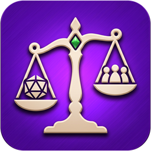
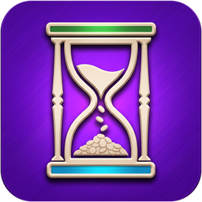
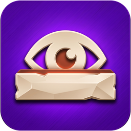

Web Tools

Challenge Point CalculatorDetermine scaling difficulty for Pathfinder Society (2e) organized play.
Downtime CalculatorDowntime income for PFS2 and SFS2, with copy-to-clipboard summaries.
Ledge Cover Line of SightCover and line of sight when a ledge is involved, for PF2 and SF2.